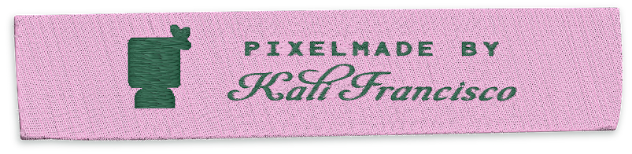
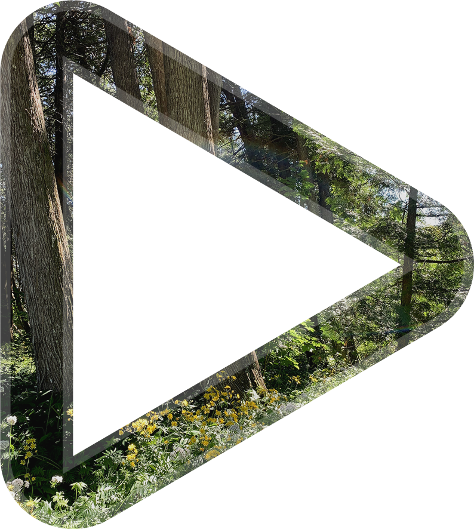
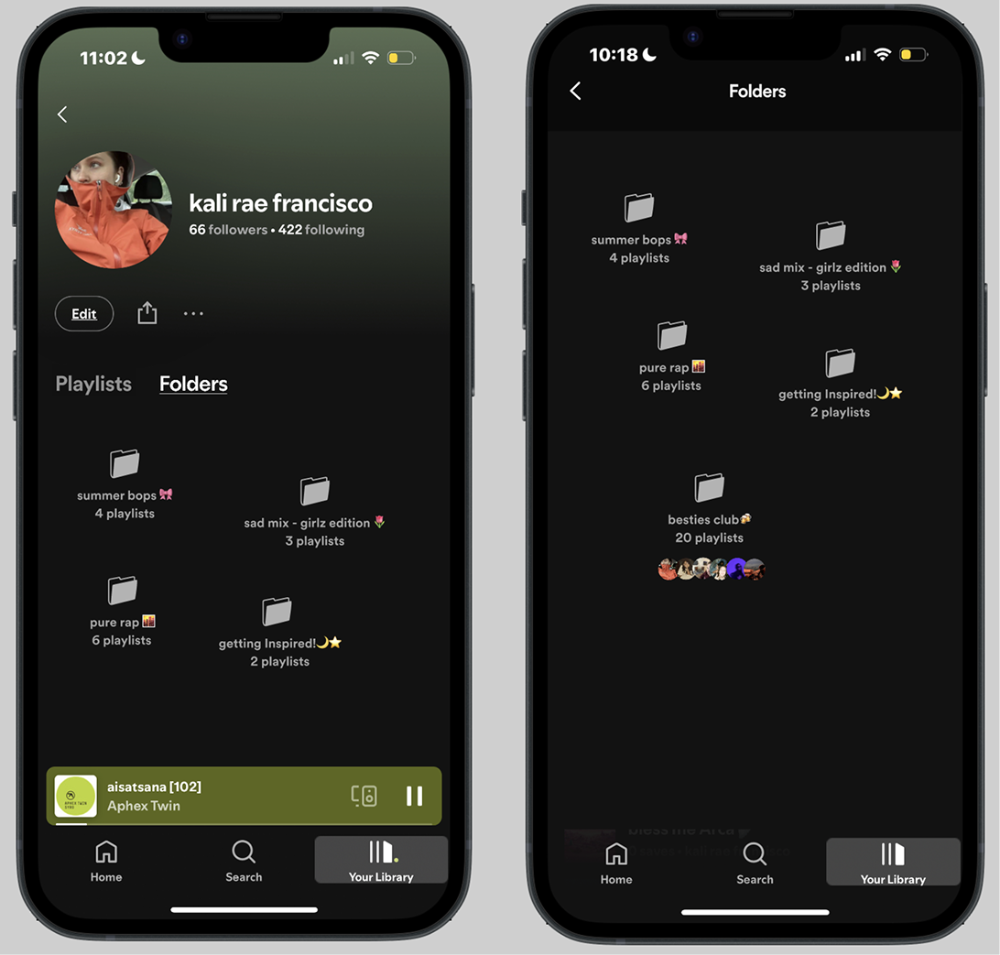

I invite you into the world of creative mediums that have helped refine my design approach.
Here's my proof of practice ìẠ‚ãÜ.Àö
Here's my proof of practice ìẠ‚ãÜ.Àö
Audio_mag / Mobile App Concept / 2025
Collage Logo Animation / After Effects / 2025

Pixelmade tag / Illustrator / 2025
Web Micro-interaction / Javascript / 2025

Sound Design (1/2) / Ableton Live Studio / 2024

Sound Design (2/2) / Ableton Live Studio / 2024

Spotify Folders / Feature Concept / 2023

Potluck / Design Challenge / 2022